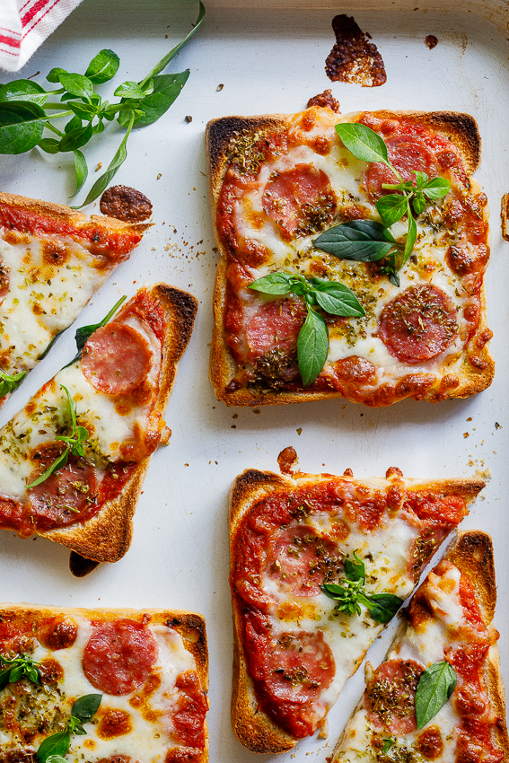

Pizza Toast

Description
A pizza toast that will bring love & peace!
Ingredients
- 4-8 Slices bread of your choice toasted
- 1 Cup Pizza sauce
- 1-2 Cups grated mozzarella
- Salami/ toppings of your choice
- 1 Teaspoon oregano
Steps
- Pre-heat the grill of your oven.
- Place the toast on a baking sheet and add a generous spoonful of pizza sauce. Spread with the back of the spoon to the corners.
- Top with a handful of grated mozzarella followed by the toppings of your choice.
- Sprinkle over a little oregano.
- Place in the oven and allow to cook until the cheese has melted.
- Remove from the oven and allow to cool for a few minutes before serving.